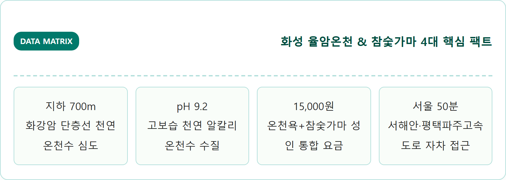
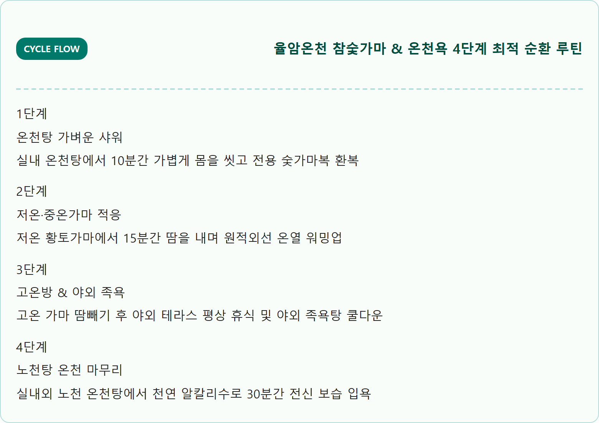
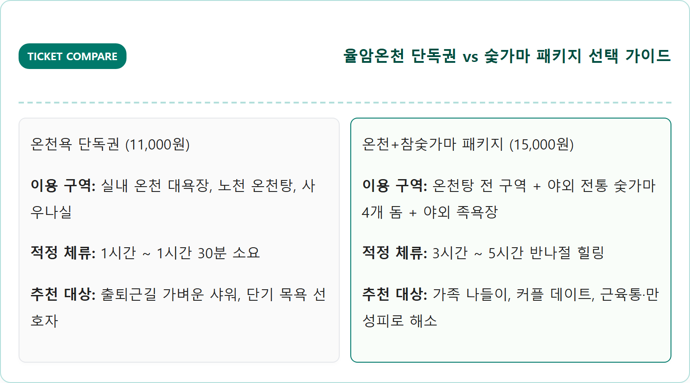
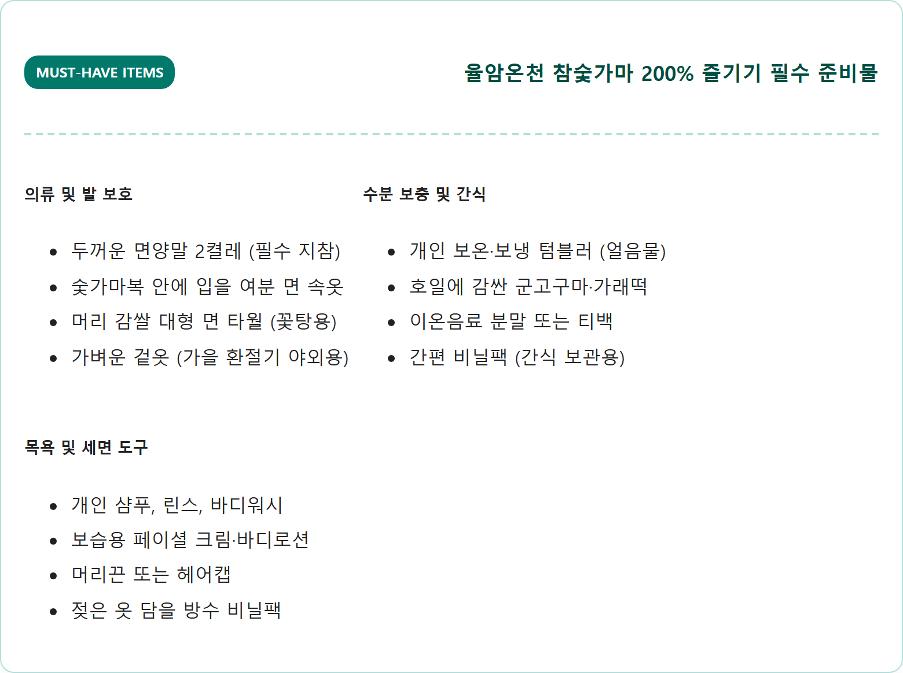
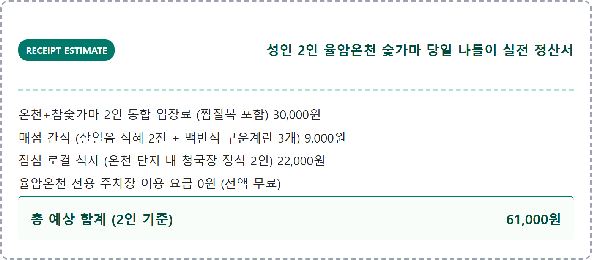
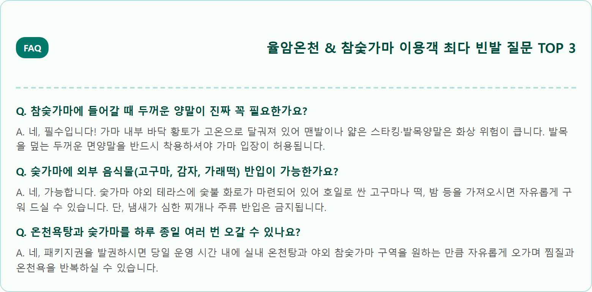

A high-detail, authentic, photorealistic eye-level photograph of a traditional Korean oak charcoal kiln spa and outdoor natural hot spring in Hwaseong, Gyeonggi-do, South Korea. In the foreground, glowing warm embers and stacked seasoned oak firewood in front of domed clay charcoal kilns. Warm comforting steam floating through crisp autumn air. Nearby, an open-air stone mineral hot spring foot bath surrounded by golden ginkgo and warm orange maple leaves. Soft warm natural late afternoon sunlight, rustic Korean healing atmosphere, rich authentic textures of red clay bricks, natural stone, and autumn trees, 8k resolution, 1:1 aspect ratio.


| 구분 | 온천욕 단독권 | 온천 + 참숯가마 패키지 (권장) | 비고 |
|---|---|---|---|
| 대인 (중학생 이상) | 11,000원 | 15,000원 | 숯가마복 상하의 + 수건 2장 포함 |
| 소인 (초등학생 이하) | 8,000원 | 11,000원 | 소인용 전용 찜질복 지급 |
| 유아 (24개월 미만) | 6,000원 | 8,000원 | 증빙서류 지참 시 적용 |
| 조조 할인 (평일 06~08시) | 9,000원 | 13,000원 | 주말 및 공휴일 제외 |




주말(토·일)에는 오후 12시부터 15시 사이에 가족 단위 입장객이 가장 많이 몰립니다.
아침 07시~09시에 입장하시면 갓 오픈한 깨끗한 참숯가마와 한적한 노천탕을 오롯이 독점하며 여유로운 힐링을 누릴 수 있습니다.